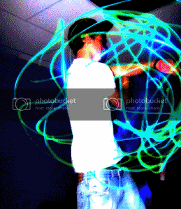

Mine lives in the middle of my left eye. Her name is Internicola.
I got those things after a prolonged session of headbanging.
Yeah eye floaties are a totally different topic. Those are just squiggly looking blood vessels floating around in you eyes, but he’s talking about hallucinations apparently linked to lack of sleep.
What he’s talking about are flashes. Floaters and flashes are lumped together as two of the most common eye phenomena out there. Oh, and floaters are bits of dead skin or eye matter or the like, not necessarily blood vessels.
So I’m the only one who sees red and green dots? FUCK.
That’s a very good conjecture, although I’m not quite sure if it would cause the motion described. But I am genetically susceptible to high blood pressure, so maybe I should take a measurement soon to see if I am still in the normal range.
Not quite, that effect is a lot blurrier and the points don’t sweep if I’m not mistaken.
I think you may be the winner, for coming up with a solid answer - - and concisely! Good work!
If I ever witness this again, I will attempt to verify the dots are following fixed courses with oneanother. It does leave some question, as to why the phenomenon has been so temporary in my observation of it.
The Wikipedia page for “Blue Field Entoptic Phenomenon” agrees that it’s easiest to see on plain surfaces giving off plenty of blue light. Peculiar that I’ve only noticed it under clouded skies and a single lightbulb.
(And while daydreaming, maybe a little bit.)
…Wow, you’re messed up… Nope, I’ve never heard of that perception, consider getting a medical opinion if you’re curious (although I doubt it could be treated). And I’m curious, are the red and green dots distinct from oneanother? Or do they often coincide in orange dots & yellow dots?
I know some ad-hominems have been tossed around, but you grossly underestimate my capacity.[/SIZE]
Yeah. Those things are weird.
I’ve had that a few times. I mostly get the white flashes on the side of my vision when I have a stress related headache (it stops flashing if I don’t move my eyes).
I do, too. But only when I’ve severely worked myself to exhaustion.
I have that too, I thought I had just damaged my eyes from gaming…
and when I close my eyes and push my hands into them for like, I dunno, 1 minute, everything seems bright and yellow and I can see stuff I’ve stopped looking at for a few seconds…
My eyes have like film grain or something going on. It’s pretty cool.
You’re welcome.
The temporal irregularity of the entopic phenomenon in my opinion is caused by a combination of two factors - 1)situations which increase blood flow to the capilaries in the eyes, causing a concurrent increase in white blood cell count in that area over the average and therefore a greater frequency of vision artifacts, and/or 2) situations where the nervous system’s self-censorship of the visible capilaries is weakened or overridden by certain mental states such as mindfulness or ‘daydreaming’ likewise causing an increase in perceptible artifacts.
I saw all the colours of the rainbow when I went out clubbing Friday night

First, you’ll ruin your eyes doing that too often, so watch out.
Second, that’s perfectly normal, considering your smushing your eye itself, as well as the blood vessels and nerve endings within. After a while, everything goes crazy.
This is pretty much what crossed my mind.
Lack of sleep can easily cause hallucinations, I wouldn’t be at all surprised if this was the case.
However, it would be interesting to know where you spent those 24 hours. Lack of activity or sensory input can also cause strange things to occur in your vision. People locked in dark rooms for more than 24 hours often report seeing things.
This phenomenon is also being used to explain cave drawings. People would enter caves for weeks at a time, before hallucinating. In an attempt to “pin them down” so to speak, they would paint them on the walls.
Oddly enough, an overload of input can cause this effect as well. Experiments have been performed where a test subject has put on special goggles with LEDs. The sunject closes their eyes and the LEDs are flashed in timed sequences. After a while subjects report seeing things in their vision, even with their eyes closed. The images they describe are often uncannily similar to many cave drawings.
Spooky, in’it?
Ok, so Ive photoshopped a picture so you can see what i see.
Normal:
My vision:
I think that he only sees that occasionally…But I was still a bit confused.
I see it all the time :hmph:
so how do you know what ‘normal vision’ is?